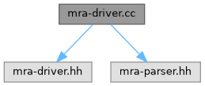

MADNESS
0.10.1
examples
compiler
mra-driver.cc File Reference
#include "mra-driver.hh"
#include "mra-parser.hh"
Include dependency graph for mra-driver.cc:

Generated on Wed Jan 28 2026 13:36:09 for MADNESS by
1.9.8